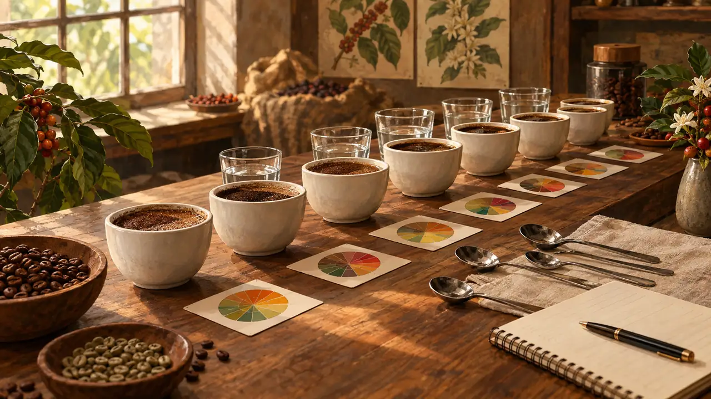

Dégustation et sensoriel
Goûter, c’est apprendre à nommer. La SCA a publié des normes de dégustation qui séparent la description objective de l’appréciation personnelle.
L’essentiel en trois points
- La SCA a adopté trois composantes du « Coffee Value Assessment » comme normes de cupping : SCA-102, SCA-103 et SCA-104 [1].
- La Coffee Taster’s Flavor Wheel date de 1995 et a été mise à jour en 2016 avec World Coffee Research [2].
- Évaluation descriptive : arôme, saveur, texture et arrière-goût, avec un langage standardisé [1].
Approfondir
Touchez un titre pour ouvrir ou fermer la rubrique.
Les normes de cupping SCA
SCA-102 porte sur la préparation des échantillons et le cupping, SCA-103 sur l’évaluation descriptive, SCA-104 sur l’évaluation affective [1].
La roue des arômes
La Coffee Taster’s Flavor Wheel, publiée en 1995, a été mise à jour en 2016 en collaboration avec World Coffee Research [2]. Le Laboratoire du site propose une roue interactive.
Pratique du cupping
Image : illustration générée pour le site, à valeur éditoriale, pas un document photographique.
Termes du dictionnaire
Références
Les affirmations renvoient aux références numérotées ci-dessous, avec leur date de consultation. Les rubriques marquées « à documenter » n’ont pas encore de source vérifiée et n’affirment rien. Certaines sources sont secondaires : leur nature est indiquée dans leur intitulé.
- SCA, adoption des normes de cupping SCA-102, 103 et 104 (CVA) · consulté le 20 novembre 2026
- SCA, Coffee Taster’s Flavor Wheel (1995, mise à jour 2016 avec World Coffee Research) · consulté le 20 novembre 2026
- Royal Coffee, « How to set up and run a coffee cupping » (décrit le protocole SCA) · consulté le 20 novembre 2026
- Gota, « The SCA protocol » (décrit le protocole de cupping SCA) · consulté le 20 novembre 2026
- SCA (2025), « Grounding green grading in sensory science » (classification des cafés verts, définition des défauts) · consulté le 20 novembre 2026
- FAO, Annex 7 : Green coffee classification and grading · consulté le 20 novembre 2026